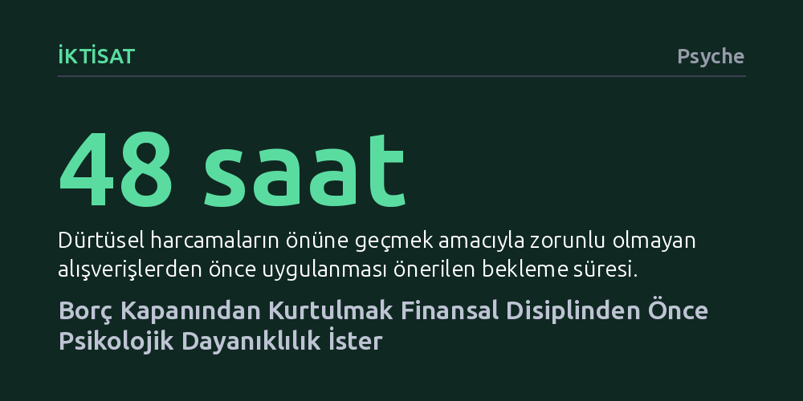

IKTISAT · Psyche · 2026-10-07
Borç batağından çıkmak salt finansal bir hesap değil, utanç ve kaçınma döngüsünü kırmayı gerektiren psikolojik bir süreçtir. Rakamlarla yüzleşip harcamanın ardındaki duygusal tetikleyicileri anlamak ve cezalandırıcı olmayan gerçekçi bir plan uygulamak borç yönetiminin temel anahtarıdır.
Borcun karakter zafiyetinden değil duygusal tetikleyicilerden beslendiğini göstererek kişiyi felç eden utanç duygusunun yerine eyleme geçirici sorumluluk bilincini koyar.

Borç batağında sıkışıp kalmak çoğu zaman salt matematiksel bir gelir-gider dengesizliği olarak görülür. Oysa borçla mücadele eden herkes, bu durumun bir bütçe açığından çok daha fazlası olduğunu iyi bilir. Klinik pratikte borç sarmalına kapılan bireylerin yaşadığı en büyük engel, hesaplardaki eksi bakiyelerden ziyade bu tablonun yarattığı ağır duygusal tahribattır. İnsanlar borçlu olmayı doğrudan kişisel bir yetersizlik, sorumsuzluk ya da dağınıklık olarak etiketleme eğilimindedir.
Bu etiketleme sonucunda ortaya çıkan derin utanç, en basit idari eylemleri bile imkânsız hale getirir. Banka uygulamasını açmak, gelen ödeme ihtarlarını okumak veya bir uzmandan tavsiye istemek katlanılamaz bir psikolojik yüke dönüşür. Birey, borcun büyüklüğüyle ve bunun kendi kimliği hakkında ne söylediğiyle yüzleşmemek adına kaçınma mekanizmasına sığınır. Kaçınma anlık bir sığınak ve sahte bir rahatlama sağlasa da sorunu ertelemek borcu biçimsiz, sınırları belirsiz bir kâbusa dönüştürerek kişiyi bütünüyle felç eder.
Borç yönetimini kalıcı kılmak için psikoterapötik bir bakış açısı şarttır; çünkü harcama davranışları çoğu zaman kimlik algısı, aile geçmişi, bağlanma örüntüleri ve travmalarla iç içe geçer. Bireyler her zaman mantıklı finansal kararlar alarak para harcamaz. Tüketim sıklıkla can sıkıntısı, yalnızlık, dışlanma korkusu veya statü kazanma arzusu gibi bilinçdışı duygusal ihtiyaçların üzerini örtmek için kullanılır. Kırılgan bir özdeğer duygusuna sahip olan biri, sevilmek veya kabul görmek için başkalarına ya da kendisine gücünün yetmeyeceği harcamalar yapabilir.
Bu kısırdöngüyü kırmanın yolu, kişinin 'Neden bu haldeyim?' sorusunu şefkatli bir merakla sormasından geçer. Bireyler genellikle kendilerini acımasızca eleştirerek değişebileceklerini, yeterince sert davranırlarsa sorunu çözeceklerini zanneder. Oysa suçluluk ile utanç arasında hayati bir ayrım vardır. Suçluluk pişman olunan bir eyleme odaklanarak telafi kapısını açık tutarken, utanç doğrudan kişinin varoluşunu hedef alır ve kişiyi kusurlu ilan eder. Kendini utandırmak zihni daraltır, kaçınmayı körükler ve çözümü engeller. İhtiyaç duyulan şey kendini cezalandırmak değil, sorunu nesnel bir vaka olarak ele alıp sorumluluğu üstlenmektir.
Borçtan çıkışın ilk somut adımı, kaçınma duvarını yıkıp rakamlarla sakin bir biçimde yüzleşmektir. Hangi kuruma ne kadar borç olduğunu, faiz oranlarını ve asgari ödemeleri listelemek acı verici olsa da belirsizliği ortadan kaldırır. Şekilsiz ve devasa görünen borcun sınırları çizildiğinde, durum zihinde yönetilebilir bir problem boyutuna iner. Bu yüzleşme anını sakinleştirici bir müzik veya güvendiğiniz bir yakınınızın varlığıyla birleştirmek duygusal sarsıntıyı hafifletir.
Bununla birlikte, sorumluluk almaya karar veren kişilerin düştüğü en büyük tuzak, aşırı cezalandırıcı ve katı planlar yapmaktır. Geçmişteki hataların kefaretiymiş gibi hayatı tüm zevklerden arındıran planlar sürdürülemez. Birey en küçük bir tökezlemede başarısızlık hissine kapılarak yeniden kontrolsüz harcamalara savrulur. Bu nedenle plan yalnızca finansal değil, psikolojik tetikleyicileri de hesaba katmalıdır. Örneğin sosyal baskıyla harcama yapılıyorsa arkadaşlarla daha mütevazı buluşmalar önermek, dürtüsel harcamalara karşı 48 saatlik bekleme süresi koymak veya banka üzerinden limit kısıtlamaları getirmek gibi koruyucu mekanizmalar devreye sokulmalıdır.
Borç batağından kurtulma yolculuğu doğrusal bir başarı çizgisi izlemez. İki adım ileri, bir adım geri gitmek bu sürecin doğal bir parçasıdır. Zorlayıcı bir çalışma haftasının ardından bütçeyi aşmak veya kaygılı bir anında gereksiz bir alışveriş yapmak kaçınılmaz gerilemelerdir. Bu anları bir karakter yenilgisi olarak yorumlamak yerine, stres karşısında nükseden eski bir başa çıkma refleksi olarak değerlendirmek gerekir. Önemli olan pes etmemek; durumu şefkatle analiz edip hedeflere yeniden odaklanmaktır.
Son olarak, borcun yarattığı derin yalnızlığı kırmak hayati önem taşır. Çoğu insan partnerinin ya da ailesinin saygısını kaybetme korkusuyla durumu en yakınlarından bile gizler. Oysa gerçeği güvendiğiniz insanlarla paylaşmak zihinsel berraklık sağlar ve yükü hafifletir. Aynı dürüstlük borçlu olunan kurumlara karşı da gösterilmelidir; zira durumu samimiyetle açıklamak bankaların yapılandırma veya borç silme kolaylığı sağlamasını mümkün kılabilir. Unutulmamalıdır ki 'eyleme geçmek özgüven doğurur'; borç bir kimlik değil, doğru duygusal ve pratik yaklaşımla aşılabilecek geçici bir problemdir.